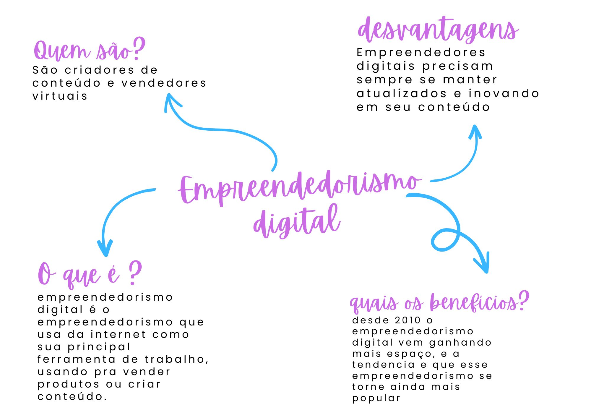

Empreendedorismo Digital
Empreendedorismo digital surgiu em meados de 2010, quando aos poucos começou a fama de vender produtos pela internet, e não demorou muito para realmente engajar na sociedade. Diversos produtos eram vendidos, produtos que você podia achar somente na internet, ou produtos que ficam mais baratos se comprados na internet, como os cursos online, Descomplica é um deles, um site muito famoso que ajuda estudantes a passarem no vestibular.
Com o início da pandemia em 2020, e com a chegada dos protocolos para não ter contato físico com as pessoas, o empreendedorismo digital teve uma grande repercussão na internet, estando em crescimento mesmo antes da pandemia. Atualmente existem diversos tipos de empresas digitais, como E-Commerce, lojas virtuais que você decide o que quer vender, Blogs ou sites especializados, estando focados em algum conteúdo específico, Infoprodutos, como o próprio nome diz, podem ser produtos gratuitos ou não com o objetivo de passar alguma informação, como por exemplo E-book e Aplicativos, cada um tendo sua função podendo ser pago ou não, Jogos, tendo uma grande repercussão com amplas áreas para serem exploradas.
Além de facilitar muito a vida dos consumidores, também abriu diversas oportunidades para os vendedores que podem trabalhar em total conforto dentro de suas casas, sendo criado o grande Home-Office, que define o trabalho em casa.
Mas nem tudo são flores, uma das maiores dificuldades que os empreendedores digitais passam, é justamente o avanço da tecnologia, parece irônico, mas quanto mais o avanço da tecnologia, mais difícil será para se atualizar no mercado, caso fique para trás, sua loja pode não ter tanto sucesso.
Com isso, surgem novas ideias, Marketing digital, são propagandas criadas por usuários com um número relevante de seguidores, que publicam e indicam produtos de uma determinada loja, sendo ela digital, ou comercial, basta apenas mostrar o produto enquanto é patrocinado pela empresa. Por fim, hoje em dia o empreendedorismo digital é considerado um meio de vender tudo, arriscadamente, passando de apenas uma moda, para um trabalho oficial.

Referências:
Sebrae: Saiba quais são os principais tipos
de empreendedorismo no Brasil
Sebrae: O que é ser empreendedor